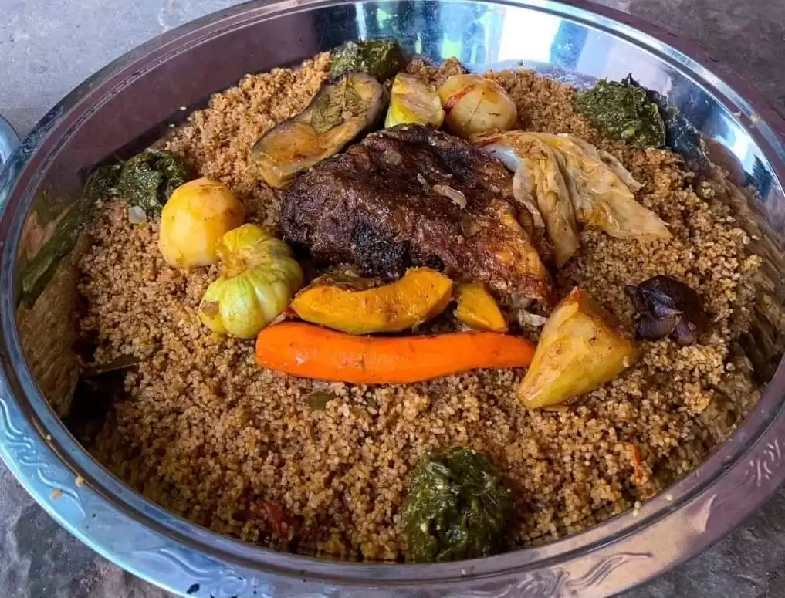

Benachin

Description
Benachin is one of the most favorite and typical Gambian dishes. It is
easy to prepare and can be made in different variations depending on your
taste.
Ingredients
- whole chicken
- oil
- onions
- hot peppers (depending on the taste)
- green pepper
- tomatoes
- rice
-
season vegetables (carrot, cassava, cabbage, eggplant, bitter tomato,
okra, potato, pumpkin, etc.)
- garlic
- Spring onion (optional)
- Ginger (optional)
- tomato paste
- bay leaf
- black pepper
- vinegar
- salt
- mustard
- Maggie / Jumbo / Joker seasoning to the taste
Steps
- Prepare seasoning
- remove skin from chicken and cut into pieces
- wash chicken with lime and salt, then marinate for some time
- Steam chicken
- etc
Home